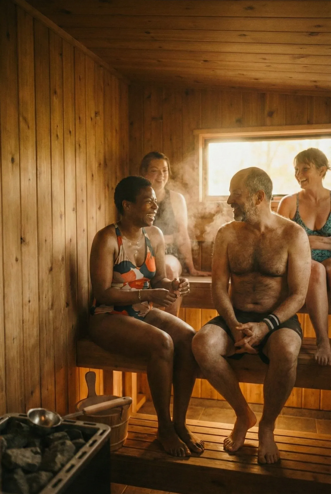
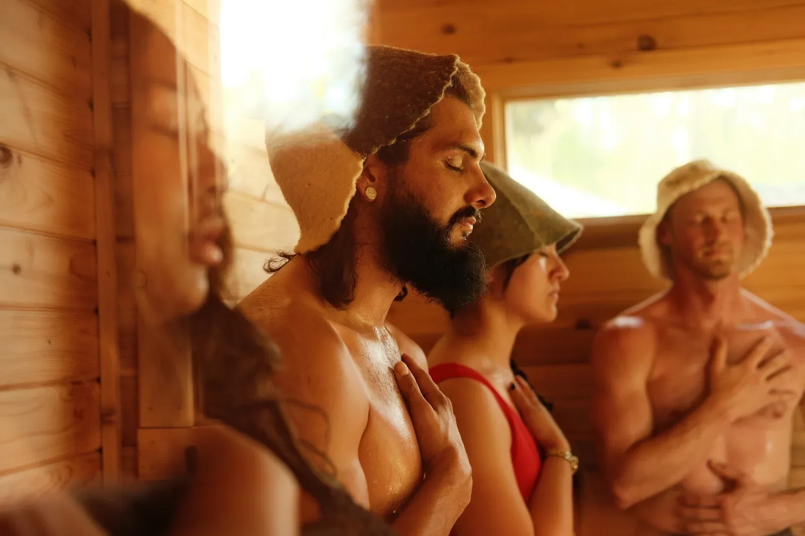
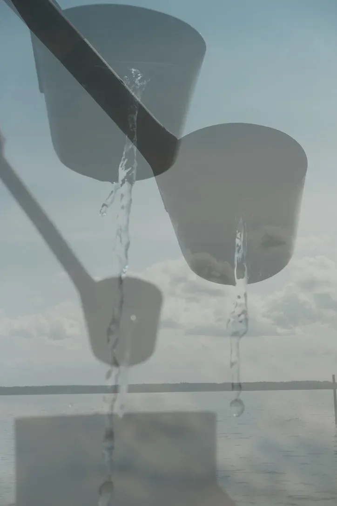
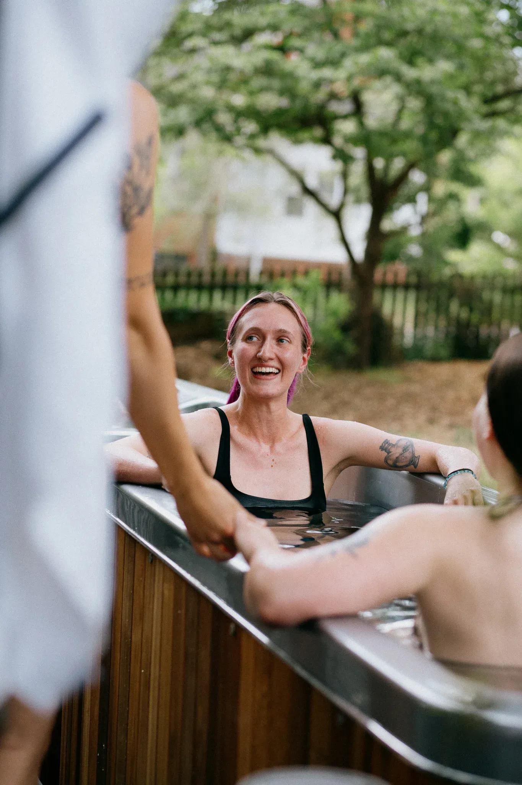

The body
opens.
Vessels widen. Heart climbs to a walk's pace.
Skin sweats. Shoulders drop.

It's the rhythm.

Vessels widen. Heart climbs to a walk's pace.
Skin sweats. Shoulders drop.

Vessels close.
Breath catches.
Norepinephrine triples.

Blood rushes back.
The skin hums.
A quiet that lasts hours.

Science calls it
We call it a good round.
Hot. Cold. Rest. Repeat.

Come find your rhythm.
Open hours all week.